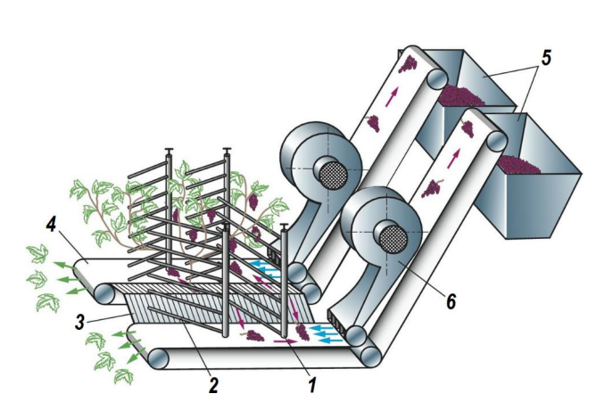

УДК: 631.358
Мико Анастасия Львовна, студентка 2 курса факультета садоводства и ландшафтной архитектуры, ФГБОУ ВО РГАУ-МСХА имени К.А. Тимирязева
Научный руководитель: Мехедов М.А., доцент кафедры сельскохозяйственных машин, ФГБОУ ВО РГАУ-МСХА имени К.А.Тимирязева
Аннотация: в статье рассмотрен принцип работы виноградоуборочного комбайна. Выявлены преимущества механизированной уборки винограда, приведены результаты расчеты эффективности применения комбайновой уборки на виноградниках РФ.
Ключевые слова: виноградоуборочный комбайн, механизация виноградарства, виноградарство, уборка винограда в России.
Потребность в применении механизированной уборки технических сортов винограда непрерывно растет. Это связано с высокими ценами на ручной труд и с дефицитом квалифицированных работников. Соответственно, предприятиям целесообразно применять механизированную уборку винограда.
Комбайн работает на виноградниках с междурядьями не менее 2 м. Рабочие органы комбайна (рисунок 1) смонтированы на высококлиренсном шасси портального типа. Комбайн оборудован пальцевыми или бичевыми стряхивателями 1, снабженными ударными стержнями из стекловолокна 2. Стержни ударяют по ветвям кустов при поступательном движении машины над рядом виноградника. Под действием колебаний ветвей ягоды отрываются от гроздей и падают на улавливатели 3, после чего скатываются на продольные транспортеры 4 или в ковши элеваторов для подачи в бункера 5. В процессе перемещения ягоды очищаются от примесей воздушными потоками, создаваемыми нагнетательными вентиляторами 6. Из бункера ягоды выгружаются в транспортные средства, следующие по междурядью [1].
Производят модели для уборки винограда на равнине, участках с уклоном до 5° и до 12°, последние снабжают системой стабилизации горизонтального положения. На рынке представлен широкий ассортимент зарубежных виноградоуборочных комбайнов. Основные страны-производители: Италия, Франция, США, Новая Зеландия, Германия
В России ранее использовали самоходные виноградоуборочные комбайны СВК-3М (Молдавия), с производительностью 0,6 га/ч и полнотой сбора урожая более 95%. СВК-3М заменяет 50 сборщиков винограда, обладаtт высокой маневреностью (ширина поворотной полосы не более 6
21
метров). Наличие системы стабилизации позволяет использовать комбайн на склонах до 12° [2, 3]. В настоящее время производство СВК-3М остановлено и можно приобрести единичные работоспособные машины на вторичном рынке сельскохозяйственной техники.
К преимуществам механизированной уборки можно отнести относительно низкую стоимость, высокую производительность, возможность работы 24 часа в сутки. Однако следует учесть, что для производства некоторых десертных вин (Сотерн), а также для сортов винограда с тонкой кожицей ягод необходим ручной сбор. Комбайновую уборку невозможно проводить в районах с очень неровным рельефом.
В большинстве случаев применение механических комбайнов являются наиболее экономичным способом уборки урожая. Располагая такими функциями, как полный привод, автоматическое выравнивание на склонах и высокая производительность, продолжается расширение их использования.
Анализируя результаты проведенных расчетов (таблица) использование комбайна Gregoire G8.260 (Франция) можно считать эффективным для хозяйств, имеющих виноградники технических сортов площадью более 40 га, при соблюдении условий: ширина междурядий 2 м, расстояние между кустами в ряду 1,5 м, регулярное проведение контурной обрезки, урожайность винограда 30-40 т/га.
Несмотря на государственную поддержку развития виноградарства и виноделия в нашей стране внедрение машин для хозяйств будет
22
затруднительно, вследствие того, что основная часть государственного финансирования уходит на закладку новых виноградников и уход за ними.
Таблица
Расчет эффективности использования виноградоуборочного комбайна GRÉGOIRE G8.260
| Показатель | Единица измерения | Значение |
|---|---|---|
| Цена самоходного виноградоуборочного комбайна GRÉGOIRE G8.260 (Франция) на вторичном рынке | млн.руб. | 15 |
| Стоимость ручной уборки винограда | руб./кг | 30 |
| Урожайность винограда | т/га | 30…40 |
| Удельная стоимость ручного сбора | млн.руб./га | 0,9…1,2 |
| Стоимость ручного сбора урожая на винограднике площадью 40 га | млн.руб. | 36…48 |
На основе проведенных исследований можно сделать следующие выводы:
Библиографический список
23